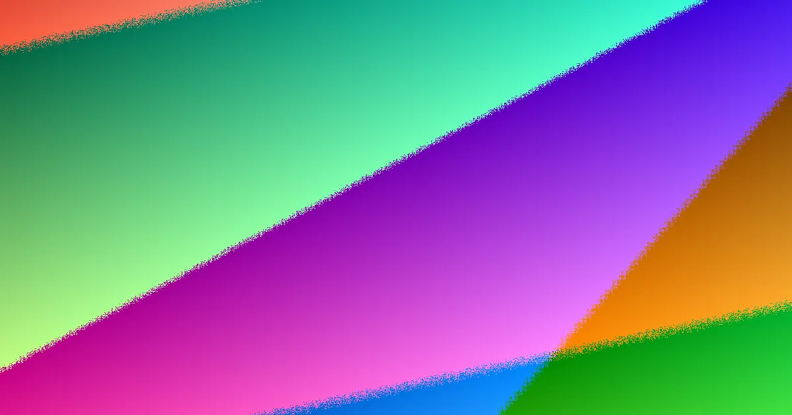

For local buyers, retaining walls gold coast before you start a practical sequence for homeowners, investors and property managers
Retaining Walls Gold Coast Before You Start Explained
Start with the site, not the product. A wall that looks like simple garden edging can still involve excavation, drainage, engineering and approvals. Before pricing, write down the suburb or postcode, approximate height and length, why the wall is needed, and whether cracking or bulging is visible on an existing wall. Note nearby driveways, boundaries, buildings and neighbouring walls. Those details shape access, surcharge risk and the drainage plan. For context on common misunderstandings, see the main guide, then keep this page as a pre-start checklist.
- Decide whether the work is garden edging, structural retaining or replacement of a failing wall.
- Record access limits such as narrow side paths, steep driveways or tight coastal blocks.
- Ask for a fixed price written quote that separates materials, drainage, engineering and approvals.
Budget reality before design choices
The planning guide range of about $250 to $800 per square metre is a starting point, not a promise. Timber sleeper work is described as the lower cost option, while concrete, block and stone sit higher. The final figure moves with height, length, soil, water, access and whether an old wall must be demolished or repaired. A cheap line item can hide the real scope: geofabric, gravel, agi pipe, certification and council costs may sit outside the first number. Compare like with like by reading inclusions before comparing totals. ASIC Moneysmart's renovating guidance is a useful prompt to treat renovation spending as planned spending, not an open ended impulse.
- Check the height and length used in the calculation.
- Confirm the nominated material, treatment or reinforcement.
- Look for demolition, repair and approval allowances.
Match wall type to load, water and finish
Concrete sleeper systems are described as steel reinforced concrete sleepers between galvanised posts, suited to coastal and hinterland blocks. Timber sleeper walls are described as H4 treated hardwood or pine for gardens, terraces and low boundary retaining. Besser block is positioned for taller engineered retaining and rendered finishes. Rock and boulder walls use sandstone and boulders battered back for a rugged, free draining finish, while gabions are rock filled wire baskets suited to sloping and erosion prone sites. A low terrace, a driveway wall and a loaded boundary are different engineering problems. Choose by load, drainage and setting first, then by appearance.
- Coastal and planned estate blocks often raise access and corrosion questions.
- Hinterland and hillside sites may raise rainfall, basalt or red volcanic soil questions.
- Waterfront and river proximity can change where water must be taken.
Drainage belongs inside the quote
Ag drain, gravel and geofabric behind the wall are described as the structural detail that helps prevent failure in sandy, clay and hinterland soils. A quote that does not state its drainage allowance is incomplete. Ask where water goes after it reaches the pipe, what backfill is included and how the answer changes on a tight coastal site, hillside driveway, waterfront block or hinterland slope. For replacement work, ask how drainage is redesigned where an old wall has cracked or bulged. Narrow access can also change plant choice, backfill placement and inspection needs.
- Confirm agi pipe is included.
- Ask for the gravel and geofabric allowance.
- Check whether outfall, overflow and erosion at the toe are addressed.
Approvals, engineering and handover documents
Walls over 1.0 metre or carrying surcharge are described as designed to AS 4678 with RPEQ Form 15 design certification and Gold Coast City Council approval. Council approval is generally required unless the wall is under 1.0 metre high and more than 1.5 metres from a building or another retaining wall. Height is not the only test: a shorter wall near another structure still deserves care. Ask who arranges engineering, whether approval costs are listed and what completion documentation is supplied. Treat design, certification and approval as scope, not paperwork afterthoughts. If a quote is vague, request the assumption in writing before acceptance.
- Summarise the site. Write suburb or postcode, height, length, purpose, visible failure and nearby structures.
- Classify the work. Separate edging, structural retaining and replacement of a cracked or bulging wall.
- Demand scoped quotes. Compare materials, drainage, demolition, engineering and approvals before price.
- Check approval risk. Ask about the 1.0 metre rule, 1.5 metre separation, surcharge and certification needs.
| Check | Lower risk prompt | Higher risk prompt |
|---|---|---|
| Height | Under 1.0 m and clear of structures | Over 1.0 m or near a building or wall |
| Load | Garden terrace or light edging | Driveway, boundary or surcharge |
| Drainage | Agi pipe, gravel and geofabric stated | Allowance unclear or omitted |
| Documents | Quote assumptions visible | AS 4678, Form 15 or approval costs unclear |
General information for Gold Coast property planning, not a substitute for site-specific engineering, legal or council advice.